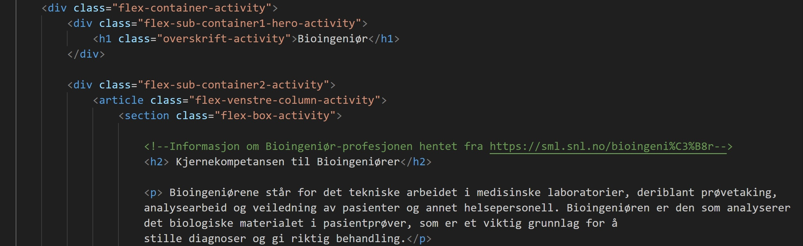
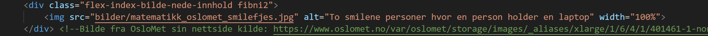

Økt accessibility eller «tilgjengelighet» i forbindelse med ikt er lovpålagt i Norge og
handler om at ikt-løsninger som nettsider og annet skal være tilgjengelig for alle,
inkludert de med ulike funksjonshemninger. Dette kan f.eks være redusert eller manglende syn.
Vi har derfor prøvd å implementere en rekke løsninger for å øke accessibility i størst mulig grad.
I HTML-dokumentet har vi brukt overskrifter der det er naturlig (eksempel i bilde under), og ved rikig rekkefølge
uten å hoppe over noen av nivåene. Dette er viktig for at skjermlesere skal kunne forstå
innholdet og for at man naturlig kan hoppe ved behov.

Lagt til språk med lang-attributtene og tittel med tittel-elementet i HTML-dokumentet.
Disse hjelper søkemotoren å bestemme språk og relevans, samt gjøre siden mer synlig og søkbar.
Brukt farger som ikke blender inn i hverandre, slik at de har grei kontrast. Dette er viktig for
det rent visuelle. Svaksynte/de med redusert syn eller fargeblinde kan ha vanskeligheter med
å se/lese innholdet når fargene ikke har god nok kontrast.
Beskrevet alle bilder med alt-attributter (eksempel i bilde under). Dette er både fint når bilde av en aller annen grunn
ikke lastes inn, men også ved bruk av skjermleser hvor bilde blir «lest opp» for
at bruker skal kunne forstå hva som står der.

Markere lenker med en underlinje der det er naturlig. Dette gjør det lettere å se lenken for svaksynte.
Endret farge på lenker etter å ha besøkt nettsiden. Dette gjør det også enklere å se lenken for svaksynte.
Vi har beholdt fargeendringen på activity-page av denne grunn, mens på index-page prøve vi å etterligne orginalsiden i mest mulig grad, og
den ble derfor ofte fjernet.
Tittel på lenker (eksempel i bilde under). Dette er også nyttig for skjermlesere ved synshemning. Vi har derfor unngått å skrive «les mer» i tittelen, for at
skjermleser ikke skal få mange av de på rad uten kontekst.
 Benytte semantiske elementer fra html 5/css3 etter beste emne. For å unngå å bare bruke div. har vi inkludert semantiske elementer som main, article, section osv (eksempel i øverste bilde). Det gjør koden mer
oppdatert og gir en bedre lesbarhet i selve koden, samtidig som det øker accessibility for skjermlesere.
Benytte semantiske elementer fra html 5/css3 etter beste emne. For å unngå å bare bruke div. har vi inkludert semantiske elementer som main, article, section osv (eksempel i øverste bilde). Det gjør koden mer
oppdatert og gir en bedre lesbarhet i selve koden, samtidig som det øker accessibility for skjermlesere.
Etter å ha gjort et helhjertet forsøk på å øke accessibility som beskrevet over, var det på tide å teste koden gjennom «lighthouse»
sin «accessibility-test». Testen kan ikke plukke opp alt, og anbefaler derfor også å ta en manuell sjekk.
Samtlige sider ble testet og de mindre komplekse sidene (accessibility-page, github-page og til og med activity-page) kom godt ut av testen
med en score på 100. Det var derfor ikke mye å plukke i her, selv etter en manuell vurdering som beskrevet over.
Deretter testet vi på index-page. Etter en manuell vurdering av siden fikk vi en score på 93 med lighthouse etter første runde. Vi fikk et forslag på forbedringer som gjorde at vi
la til tittel på videoen på toppen under «flex-sub-container1-hero-index» (bilde under). Dette for å hjelpe skjermlesere, til å beskrive innholdet.

Det krevdes ikke flere endringer til for at vi så fikk en ny score på 100 (bilde under).